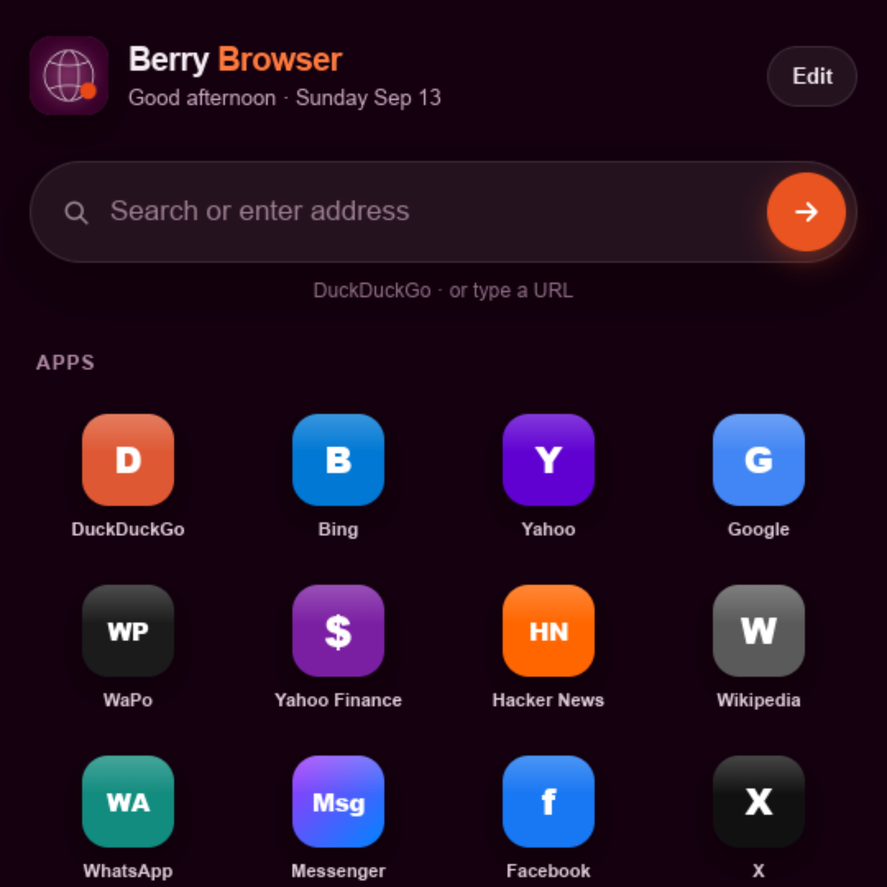
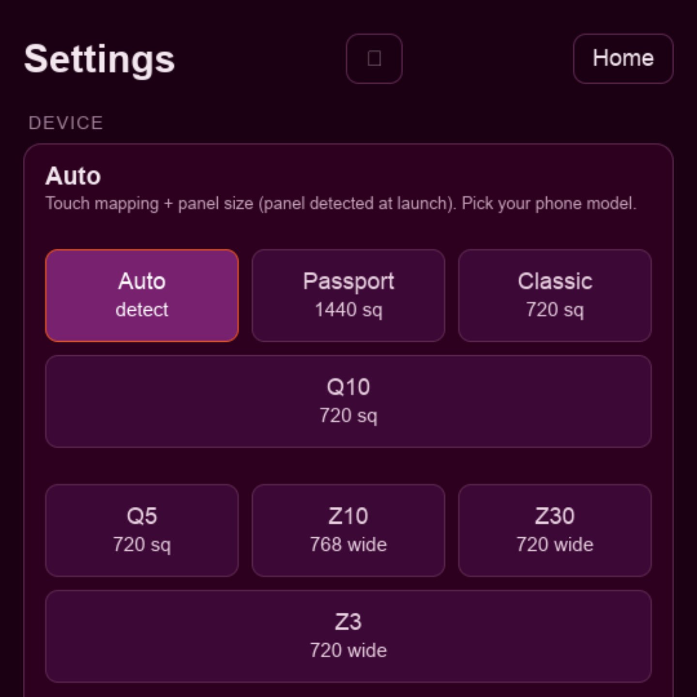

Nine device panels
Auto-detected at launch with render buffer size and touch coordinate mapping scaled to each:
- Passport · Classic · Q20 · Q10 · Q5
- Z10 · Z30 · Z3 · Leap
Berry Browser V3 · BlackBerry 10
Berry Browser is a modern web browser for BlackBerry 10. It runs a genuine, current-generation Chromium engine on QNX — not a reskin of the stock 2013 WebKit browser — which means today’s sites get today’s rendering, JavaScript, and TLS.

The engine is ported to BB10’s native Screen graphics stack through a purpose-built Ozone backend, with EGL compositing on the device’s Adreno GPU — real windowed browsing, not a headless shell pretending to be a browser.
It is compiled specifically for this hardware: ThinLTO plus profile-guided optimization, where the optimization profile was collected from real browsing sessions on a Passport. The result is measurably faster on the paths that matter on a 32-bit ARM phone — the event loop, garbage collection, CSS, and the compositor.
Auto-detected at launch with render buffer size and touch coordinate mapping scaled to each:
13 sections — Device, Display, Frame rate, Content & privacy, Network, YouTube, Identity, Performance, JS memory, Developer, Home screen shortcuts, Share & system, and Start page.
Inside those: 24 on/off toggles, three tap-to-select preset rows, and three free-text fields.
That depth is deliberate. Running a modern engine on decade-old hardware means the right trade-off differs per device and per site, so the trade-offs are exposed instead of hidden:
Berry Browser is beta software under active development. Some heavyweight sites still struggle.
Berry Browser: Modern Chromium for BlackBerry 10 (Passport) — embed starts at the demo (~8:55).
Chromium inside a native BB10 .bar — GPU window, modern TLS, and sites stock BB10
cannot render. Blink and V8 replace the platform’s frozen WebKit fork.

sw7ft/berry-browser is the promo site and release hub — download the
.bar, read release notes, watch the demo.
Patches, branches (berry-v3), and the multi-gigabyte tree live in
chromium-for-bb10.
Same project, different front door.
Works alongside BerryCore and
berrycore.sw7ft.com for rooted
qpkg installs — sideloading the BAR works on standard dev-mode setups too.
.bar with Sachesi, DDPB, or an on-device BAR installer.Previous stable binaries remain in chromium-for-bb10/releases (e.g. build 84). Newer test BARs may also appear on berry-browser releases before promotion.
Download build 84 (archive)| Device | Typical panel |
|---|---|
| Passport | 1440×1440 |
| Classic · Q20 | 720×720 |
| Q10 · Q5 | 720×720 |
| Z10 | 768×1280 |
| Z30 · Z3 · Leap | 720×1280 |